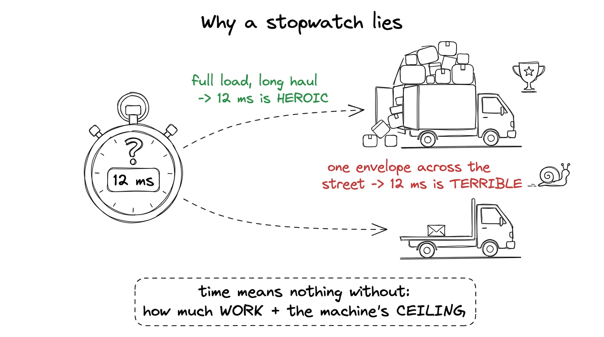
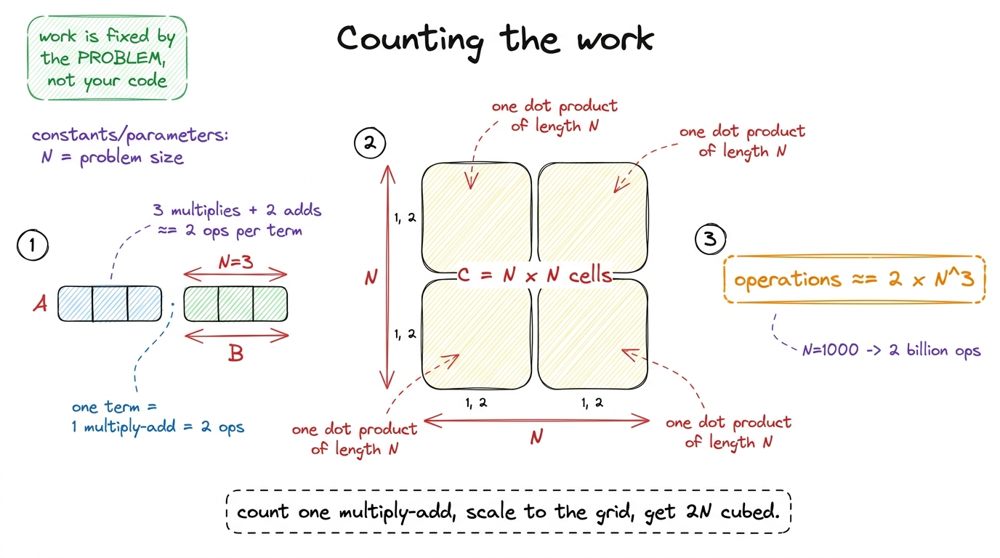
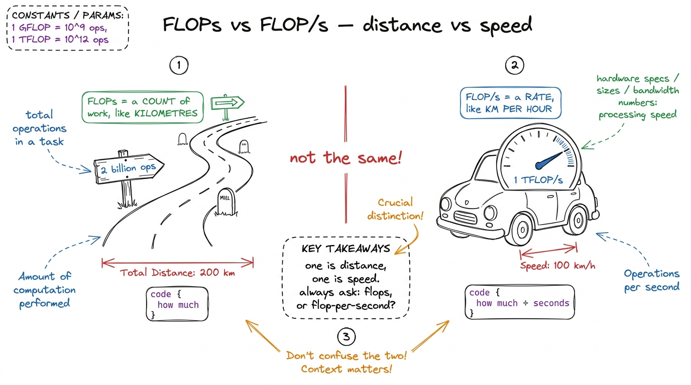
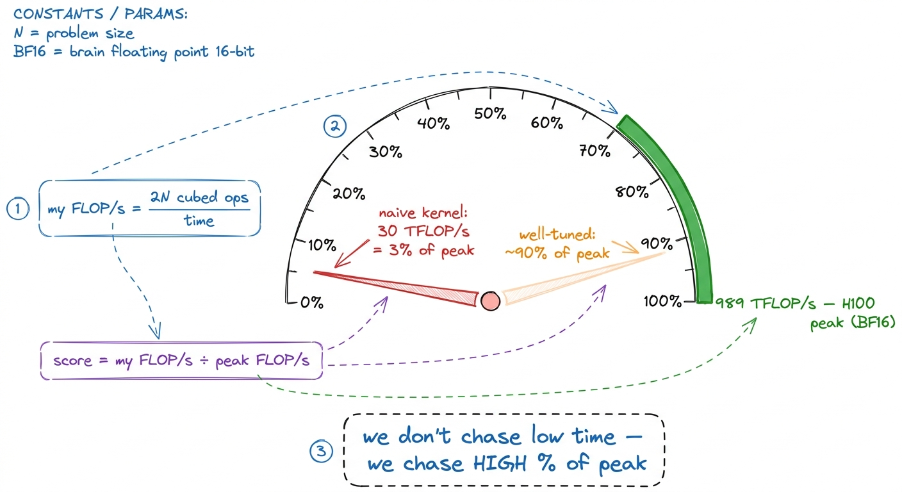
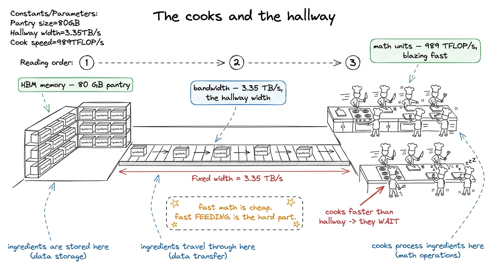
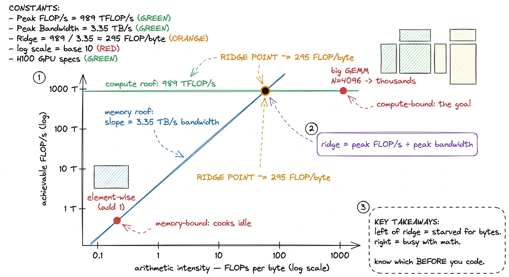

What 'fast' actually means: time, FLOPs, bytes
By the end of this chapter you can stand at a whiteboard and teach what "fast" actually means on a GPU — not with a stopwatch, but with the three honest units a kernel engineer lives by: operations, FLOP/s, and bytes moved. And you'll be able to explain why a stopwatch, on its own, tells you almost nothing worth knowing.
This is the chapter that turns "it feels slow" into "it's memory-bound at 3% of peak." Once a student owns these units, every later chapter — tiling, coalescing, the whole GEMM ladder — becomes a story about one of three numbers going up. So let's build the units from zero, slowly, until they feel like common sense.
Why a stopwatch is not enough
Imagine a student runs their kernel, sees "12 milliseconds," and beams. Is that good? You have no idea. Twelve milliseconds might be world-class for a huge matrix, or it might be a catastrophe for a tiny one. A raw time answers "how long did it take?" but never "how close was it to the best this machine could do?" — and the second question is the whole job.

figure rendering · The same time can be triumph or disaster. To judge it you need the worSo we need to measure two things the stopwatch hides: how much work the kernel did, and how much traffic it moved. Those are our first two units.
Unit one: operations (the work)
An operation here means one piece of floating-point arithmetic — one multiply, or one add. In AI, the atom is the multiply-add: a × b + c. That's two operations bundled together (one multiply, one add), and it's the beating heart of every neural network.
[1,2,3] · [4,5,6] — is (1·4)+(2·5)+(3·6). That's 3 multiplies and 2 adds = 5 floating-point operations. We usually round it to "2 operations per term," so a length-3 dot product ≈ 6 operations. Tiny, countable, done by hand. This is the unit everything else is built from.Now scale it. A matrix multiply of two N × N matrices is a grid of N² dot products, each of length N. Each dot-product term is one multiply and one add — 2 operations. So the total work is:
operations ≈ 2 · N³That 2N³ is the most important formula in the whole course. It says the work in a matmul grows with the cube of the size. Double N, and you do eight times the arithmetic.

figure rendering · Building the work count from the atom up: one multiply-add, scaled acrN = 1000, that's 2 × 1000³ = 2 billion operations — for one matrix multiply. A real model does matrices bigger than this, millions of times, for every word it writes. Say it plainly: "Before we ever talk about speed, understand the amount. This is a mountain of arithmetic, and our whole job is to move that mountain efficiently."Here is the key discipline to teach: the operation count is a property of the problem, not your code. A matmul of size N is 2N³ operations whether you write it beautifully or terribly — nobody can make it do fewer multiply-adds. That fixedness makes it a fair yardstick: it's the numerator we'll divide everything by.
Unit two: FLOP/s (the rate)
Now we combine work and time. FLOPs (with a capital-S) means "floating-point operations" — a count, the thing we just measured: 2N³ of them. FLOP/s (with a slash) means "floating-point operations per second" — a rate, work divided by time.
FLOP/s = operations performed / time takenN=1000 matmul is 2 × 10⁹ operations. Suppose it runs in 2 milliseconds (0.002 s). Then the rate is 2e9 / 0.002 = 1e12 FLOP/s = 1 TFLOP/s (one trillion operations per second). Now the "12 ms" from earlier finally means something — you divide the fixed work by the time and get a speed you can compare against the machine.
figure rendering · The confusion killer, drawn: FLOPs is a distance (a count of work), FLAnd the machine has a top speed. An NVIDIA H100 GPU can sustain about 989 TFLOP/s in BF16 through its tensor cores — roughly a thousand trillion multiply-adds per second. That's the ceiling. So the real scoreboard isn't time at all; it's:
how good is my kernel = my FLOP/s / the machine's peak FLOP/s
figure rendering · The real scoreboard: your achieved FLOP/s as a fraction of the machineUnit three: bytes moved (the traffic)
Here's where beginners get ambushed. You'd think high percent-of-peak just means "do the math fast." It doesn't — because before the math units can chew on a number, that number has to arrive. Numbers live in memory, off to the side of the chip, and must be carried in. That carrying has a cost and a speed limit all its own.
A single 32-bit float is 4 bytes. To read a matrix, every one of its numbers must travel from memory to the chip — that's traffic, measured in bytes moved. And the pipe that carries it, HBM (High-Bandwidth Memory), has a top speed too: an H100 pulls about 3.35 TB/s — 3.35 trillion bytes per second. Fast, but finite.
N × N matrices you must, at minimum, read A, read B, and write the result C — three matrices of N² numbers, 4 bytes each: 3 × N² × 4 = 12N² bytes. For N = 1000 that's 12 million bytes ≈ 12 MB of unavoidable traffic, minimum, before any wastefulness. Write it next to the 2N³ operations. Now you have both ingredients: work on top, traffic on the bottom.
figure rendering · Two speed limits, not one: the cooks (math) and the hallway (bandwidthPutting them together: the one ratio that predicts everything
Now the payoff. You have two counts: operations (work) and bytes moved (traffic). Divide them and you get the single most useful number in performance engineering — arithmetic intensity: how much math you do for every byte you carry.
operations (FLOPs)
intensity = ────────────────────
bytes moved2N³ operations over 12N² bytes = N/6 FLOPs/byte. For N=4096 that's hundreds to thousands of FLOPs per byte. Same chip, wildly different intensity.Why does this one ratio matter so much? Because the machine has a matching ratio — its own balance point. Take the H100's two ceilings and divide them:
ridge point = 989 TFLOP/s / 3.35 TB/s ≈ 295 FLOPs / byteThis ridge point (≈295 on an H100) is the break-even intensity. It's the whole diagnostic:
- Your kernel's intensity is below 295 → the hallway runs dry before the cooks run out of work. You're memory-bound. The cooks idle. No amount of faster math helps; you must move fewer bytes (fuse, cache, lower precision).
- Your kernel's intensity is above 295 → the cooks are the wall. You're compute-bound. This is the good place — the expensive silicon is actually busy.

figure rendering · The roofline. Compare your intensity to the ridge point (≈295 on an H1Why the stopwatch failed, in one clean sentence
Now you can close the loop you opened. A stopwatch gives you time. But "good" needs three things stacked: the operations (was there a lot of work?), the FLOP/s it implies (how fast, as a rate?), and the bytes moved (was the machine even allowed to run fast, or was the hallway the wall?). Time is one number that quietly folds all three together and hides them. The kernel engineer's craft is unfolding it back into the three units — and that's what tells you what to fix.
Teaching notes: how to deliver this at the board
Here's the sequence that lands cleanly, built to move from "obvious" to "wow" without a single leap.
Board plan, in order. (1) Write "12 ms — good or bad?" and let them squirm; nobody can answer. (2) Draw the truck metaphor: work + ceiling are missing. (3) Build unit one — count operations on a length-3 dot product by hand, then reveal 2N³. (4) Build unit two — divide work by time to get FLOP/s, then divide by 989 TFLOP/s to get "percent of peak." (5) Build unit three — count bytes (12N²), introduce the hallway/bandwidth (3.35 TB/s). (6) Divide work by bytes → intensity. (7) Divide the two ceilings → 295. (8) Land the roofline.
2N³ operations and 12N² bytes — visible on the board the entire time, side by side, because the finale (intensity) is literally dividing the top of the board by the bottom. When you write the ratio, physically point up at the operations and down at the bytes. The gesture does the teaching.You can now teach
- Why a stopwatch is not enough — time hides the work done and the machine's ceiling, and the truck metaphor makes that obvious.
- Operations (FLOPs) as the unit of work, counted by hand on a dot product and scaled to the
2N³cost of a matmul. - FLOP/s as work-over-time, and the real scoreboard: your FLOP/s divided by the machine's peak (989 TFLOP/s on an H100) — "percent of peak."
- Bytes moved as traffic across a finite hallway (HBM bandwidth, 3.35 TB/s), and why the cooks idle when the hallway runs dry.
- Arithmetic intensity — operations ÷ bytes — and the ridge point (≈295) that predicts memory-bound vs. compute-bound before a line of code is written.
- The production link: these exact units drive how vLLM, FlashAttention, and every serving stack are profiled and tuned today — and why they matter more each hardware generation.